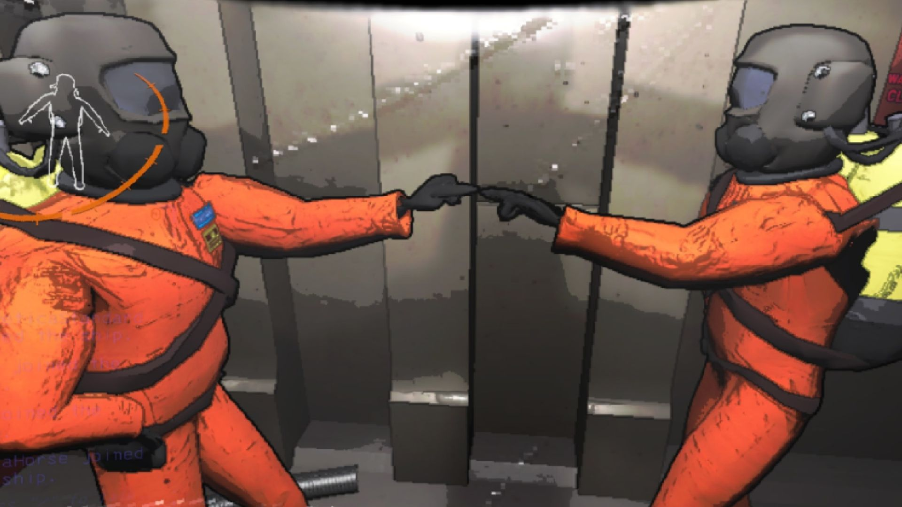

Lethal Company es un videojuego cooperativo de terror y supervivencia, desarrollado y publicado por Zeekerss. Este videojuego está hecho para jugar con 3 amigos más, 4 jugadores, en el cual juegas desde una perspectiva en primera persona y te comunicas con ellos mediante un chat de voz por proximidad. Este juego se encuentra actualmente como acceso anticipado, es decir, el juego no está terminado, aún así, en muy poco tiempo ha adquirido una gran relevancia y ha ganado el premio a mejor juego con amigos de la plataforma Steam.
Objetivo principal.
El objetivo de Lethal Company es fácil, vuestro grupo de amigos y tú sois unos viajeros espaciales contratados por “La compañía”, esta empresa os ha contratado para visitar diferentes lunas abandonadas, donde se encuentran enormes instalaciones en las cuales deberéis recoger los objetos de valor que encontréis en ellas, la chatarra, para luego poder venderlas y llegar a la cuota que “La compañía” os haya puesto. El número de objetos que puede llevar un jugador es de 4 como máximo, estos objetos tienen un peso predeterminado, cosa que se verá afectada en la agilidad del jugador.
Para lograr esta misión vuestro equipo tiene 3 días, en los que podéis visitar las diferentes lunas y recoger la chatarra de las instalaciones, cada día se puede ir a una luna diferente, debereís explorar y recolectar lo máximo posible y regresar con vida a vuestra nave antes de que anochezca, mientras un jugador se salve, los objetos recolectados de los días anteriores se conservaran, en caso de que todo el equipo muera perderéis la chatarra conseguida en ese rango de 3 días.
Pasados estos tres días tendréis que viajar a “La compañía”, sitio donde debéis vender toda la chatarra conseguida, si llegáis a la cuota establecida por la empresa seguiréis vuestra misión 3 días más hasta que lleguéis a la siguiente cuota establecida, obviamente mayor que la anterior. Ese dinero de la cuota se guarda y puede ser utilizado para comprar mejoras para la nave o para comprar objetos equipables que os ayudarán a cumplir vuestra misión más fácilmente. En caso de que no lleguéis a la cuota… creo que no hace falta decir que pasaría.
- 
Esto sería muy fácil si terminase aquí, la complicación del juego empieza con la aparición de diferentes monstruos que pueden dificultaros la misión. Estos monstruos pueden ser encontrados tanto dentro de las instalaciones como fuera. No obstante, los monstruos más peligrosos del exterior sólo aparecerán en caso de que sea de noche.
Otro factor muy importante de Lethal Company es la terminal, un ordenador que se encuentra en la nave con el cuál mediante comandos podréis elegir qué luna visitar, que objetos comprar y buscar información sobre los diferentes enemigos.

Una de las cosas más criticadas de este juego ha sido los gráficos de baja resolución que utiliza, que en mi opinión, aunque no sean los más detallados y sorprendentes, consiguen darle una buena ambientación al juego y hacer que cualquier ordenador actual de gama media pueda soportarlo. Por otro lado, una de las cosas que más se han alabado de este juego es el sonido, el cual te proporciona una inmersión total dentro de la partida.